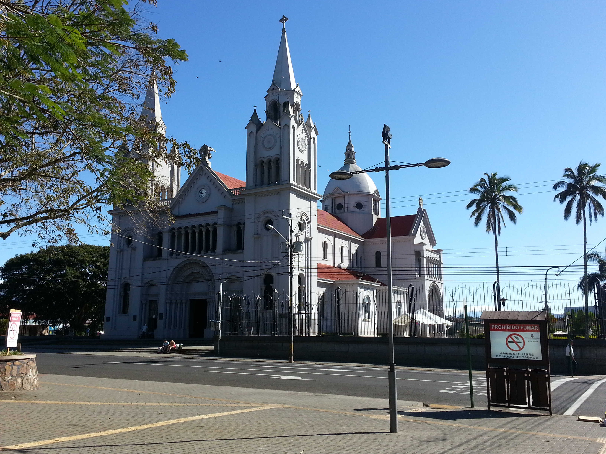
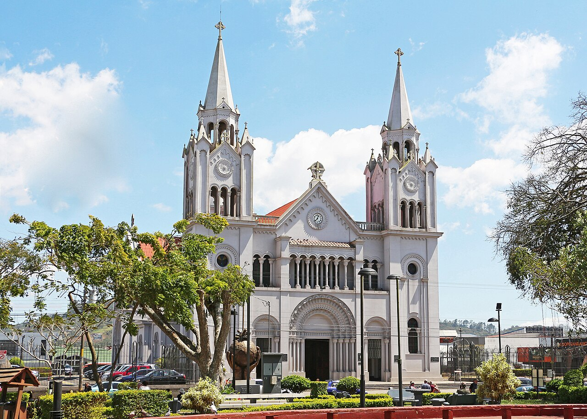
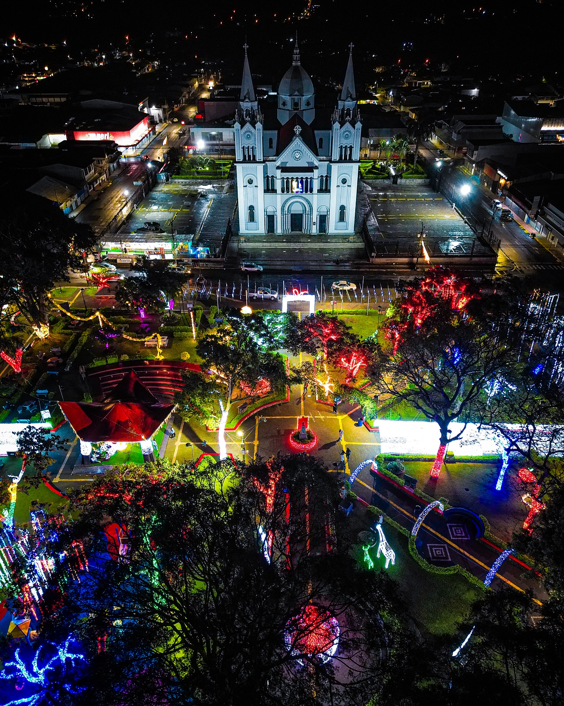
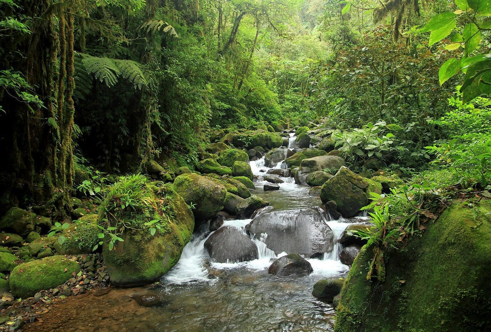
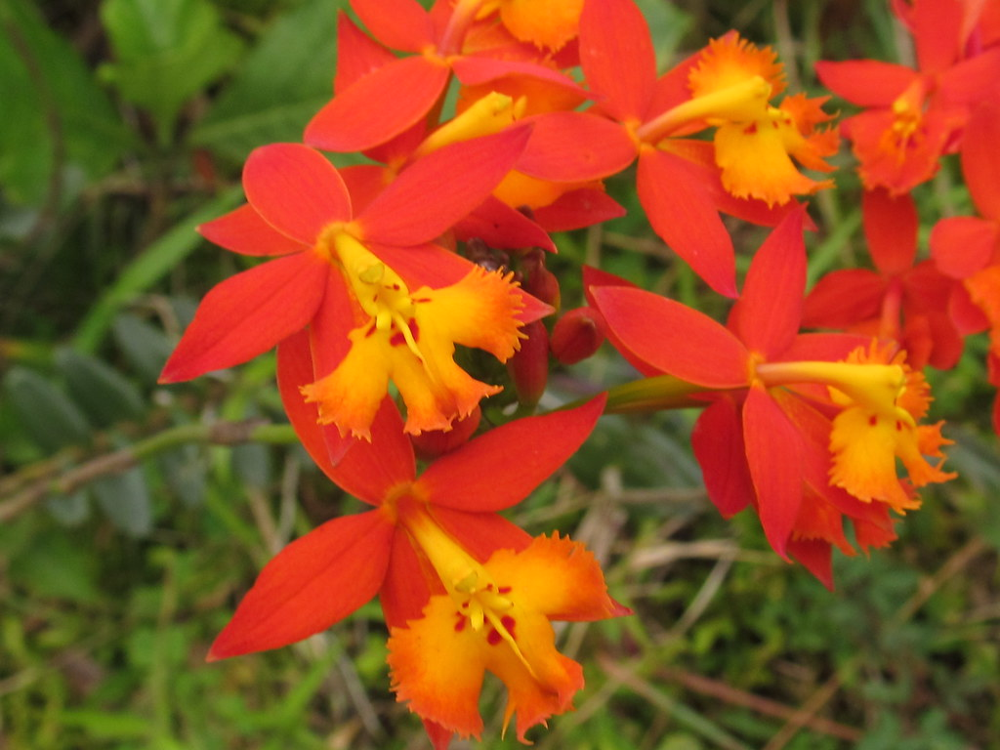
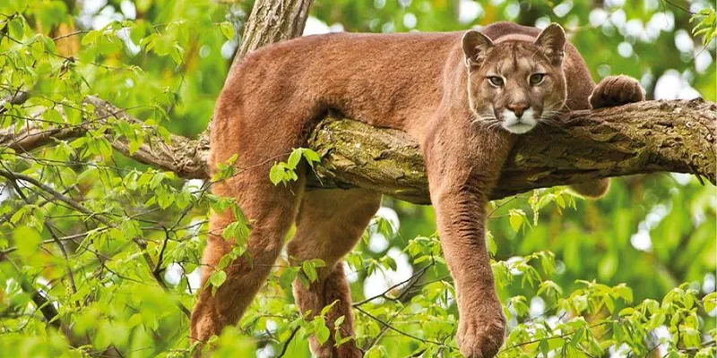
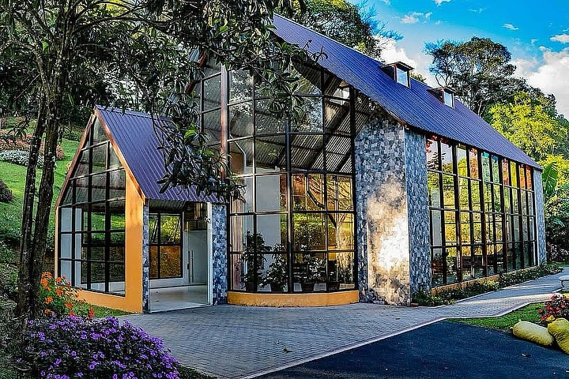
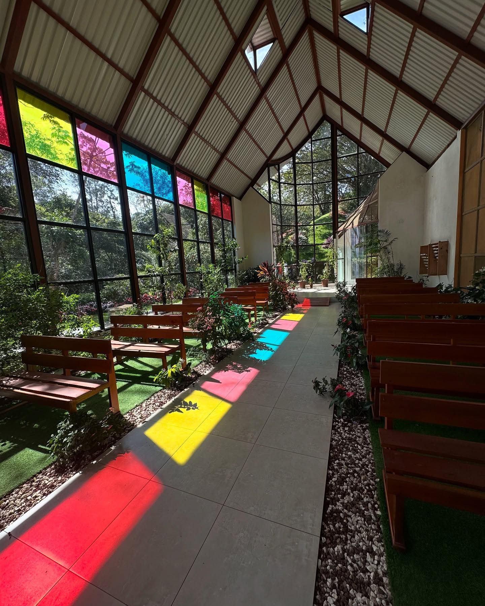
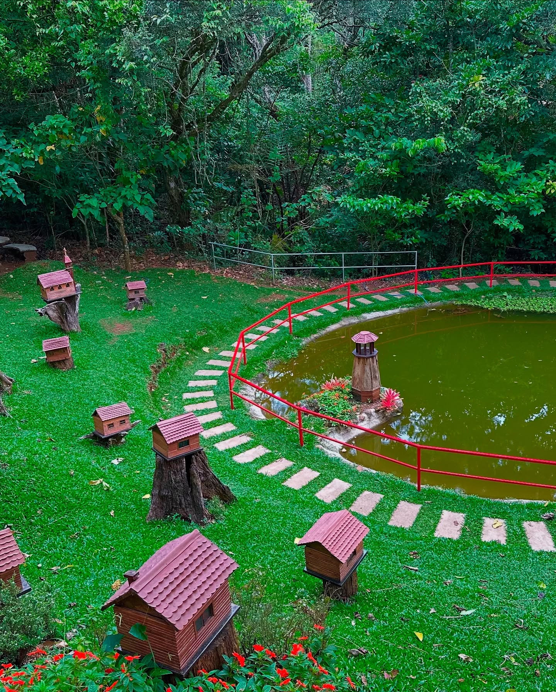

Click on a pin to explore San Ramón's beautiful destinations!
San Ramón Nonato Church (La Parroquia)



As the most emblematic and well known place in San Ramón, Alajuela, La Parroquia Church –and its adjacent park– is one of the first places people go to explore the local culture and livelihood.
This building was constructed by the population of San Ramón over the course of 26 years, from 1928 to 1954. It has an eclectic design, combining gothic and romanic elements.
Every August 30th, people from all over San Ramón and beyond come together to celebrate the Entrada de los Santos (Parade of the Saints), a commemorative parade unique to this region. (Parroquia San Ramón Nonato)
Alberto Manuel Brenes Biological Reserve



Administered by Universidad de Costa Rica, this is one of the most important biological reserves in the country. It's mostly formed by rainforest and cloud forest.
This reserve, with varying altitude, has a wide range of both flora and fauna; from small animals like birds and insects, to big animals like pumas and tapirs. It's also rich in plants like ferns, orchids, plants with medical potential against parasites, and others. (Universidad de Costa Rica)
Capilla Ámbar Butterfly Garden



This garden, as its name implies, is dedicated to the breeding, exhibition, and conservation of butterflies. It's a tourist destination as well as an educational one, which makes it convenient for all ages.
It has plenty of beautiful flowering shrubs and, though not its main attraction, it has a barn with animals, a pond, hammocks, etc.
The main building is a chapel-like facility with flowerpots and colored glass.
It also has an area for children, trails, a picnic area, among others; all of these have accessibility for people with disabilities, elderly people, and baby carts. (Capilla Ámbar - FEF)